FluxCD - Démonstration par l'exemple
Abstract
Sur un cluster Rancher Desktop fraîchement déployé, nous installerons FluxCD (ie. 'bootstrap') pour gérer le déploiement et la mise à jour de 2 applications très simples. La première voit son code source hébergé dans un dépôt Git tandis que la seconde est packagée et mise à disposition dans un dépôt Helm. Nous couvrirons donc ces deux types de déploiement.
Nous mettrons également en place des notifications pour nous alerter via une messagerie instantanée (Discord) des évolutions éventuelles de nos applications.
graph TD
A(utilisateurs)
B((ingress controler))
C{service 'agnhost'}
D{service 'podinfor'}
E[deployment 'agnhost']
F[deployment 'podinfo']
A -.-> B
B --> C & D
subgraph application 'agnhost'
C --> E
end
subgraph application 'podinfo'
D --> F
endPré-requis
Préparation de notre environnement de travail en local
Nous aurons déjà suivi les howtos suivant pour préparer notre environnement de travail sur notre laptop avec les CLIs et un cluster Kins opérationnel :
| howto | Link |
|---|---|
| Command Line Tools | https://papafrancky.github.io/000_setup/Command_line_tools/ |
| Kubernetes en local | https://papafrancky.github.io/000_setup/Kubernetes_en_local/ |
Création des dépôts GitHub
Commençons par nous authentifier sur GitHub et créons deux nouveaux dépôts privés :
| Dépôt | Usage |
|---|---|
| k8s-kind-fluxcd | dépôt GitHub dédié à FluxCD sur notre cluster |
| k8s-kind-apps | dépôt GitHub dédié à l'hébergement des applications à déployer via FluxCD |
Note
Nos dépôts ont pour préfixe 'k8s-kind-' parce que nous utilisions préalablement pour nos travaux pratiques un cluster local 'KinD' (ie. 'Kubernetes in Docker'). Nous avons depuis opté pour 'Rancher Desktop'.
Création du dépôt GitHub dédié à FluxCD : 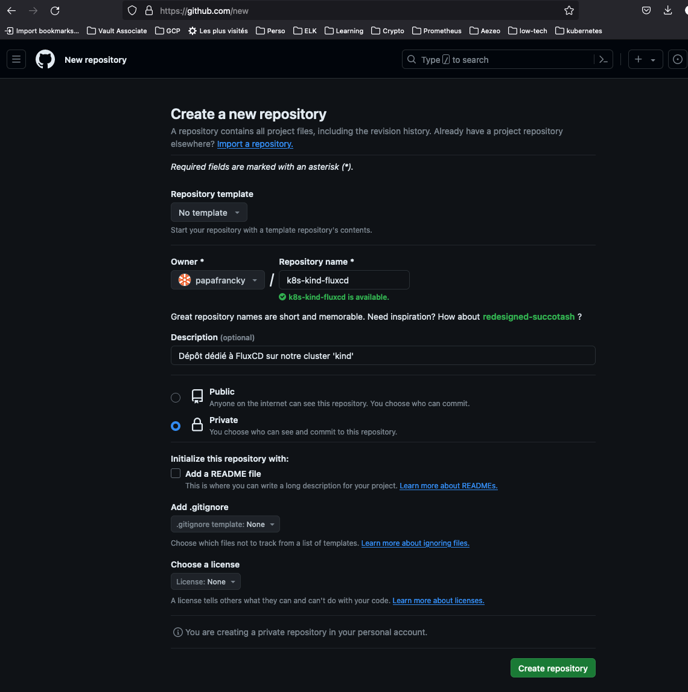
Création du dépôt GitHub dédié aux applications :

Clonage des dépôts en local
Une fois les dépôts créés, nous les clonons sur notre laptop :
Note
Nous clonerons tous nos dépôts dans le répertoire renseigné dans la variable ${LOCAL_GITHUB_REPOS}.
export LOCAL_GITHUB_REPOS="${HOME}/code/github"
cd ${LOCAL_GITHUB_REPOS}
git clone git@github.com:papafrancky/k8s-kind-fluxcd.git
git clone git@github.com:papafrancky/k8s-kind-apps.git
Bootstrap de FluxCD
Le projet Flux est composé d'un outil en ligne de commande (le Flux CLI) et d'une série de contrôleurs Kubernetes.
Pour installer FluxCD, vous devez d'abord télécharger le CLI de Flux. Ensuite, à l'aide de la CLI, vous pouvez déployer les contrôleurs Flux sur vos clusters et configurer votre premier pipeline de livraison GitOps.
La commande 'flux bootstrap github' déploie les contrôleurs Flux sur un cluster Kubernetes et configure ces derniers pour synchroniser l'état du cluster à partir d'un dépôt GitHub. En plus d'installer les contrôleurs, la commande bootstrap pousse les manifestes de Flux vers le dépôt GitHub et configure Flux pour qu'il se mette à jour à partir de Git.
| Doc | Link |
|---|---|
| Install the Flux controllers | https://fluxcd.io/flux/installation/#install-the-flux-controllers |
| Flux bootstrap for GitHub | https://fluxcd.io/flux/installation/bootstrap/github/ |
| GitHub default environment variables | https://docs.github.com/en/actions/learn-github-actions/variables#default-environment-variables |
export GITHUB_USER=papaFrancky
export GITHUB_TOKEN=<my_github_personal_access_token>
export FLUXCD_GITHUB_REPO=k8s-kind-fluxcd
flux bootstrap github \
--token-auth \
--owner ${GITHUB_USER} \
--repository ${FLUXCD_GITHUB_REPO} \
--branch=main \
--path=. \
--personal \
--components-extra=image-reflector-controller,image-automation-controller
► connecting to github.com
► cloning branch "main" from Git repository "https://github.com/papaFrancky/k8s-kind-fluxcd.git"
✔ cloned repository
► generating component manifests
✔ generated component manifests
✔ component manifests are up to date
► installing components in "flux-system" namespace
✔ installed components
✔ reconciled components
► determining if source secret "flux-system/flux-system" exists
► generating source secret
► applying source secret "flux-system/flux-system"
✔ reconciled source secret
► generating sync manifests
✔ generated sync manifests
✔ sync manifests are up to date
► applying sync manifests
✔ reconciled sync configuration
◎ waiting for Kustomization "flux-system/flux-system" to be reconciled
✔ Kustomization reconciled successfully
► confirming components are healthy
✔ helm-controller: deployment ready
✔ image-automation-controller: deployment ready
✔ image-reflector-controller: deployment ready
✔ kustomize-controller: deployment ready
✔ notification-controller: deployment ready
✔ source-controller: deployment ready
✔ all components are healthy
Vérifions dans les événements de FluxCD :
LAST SEEN TYPE REASON OBJECT MESSAGE
15m Normal NewArtifact GitRepository/flux-system stored artifact for commit 'Add Flux sync manifests'
15m Normal ReconciliationSucceeded Kustomization/flux-system Reconciliation finished in 2.536346081s, next run in 10m0s
15m Normal Progressing Kustomization/flux-system CustomResourceDefinition/alerts.notification.toolkit.fluxcd.io configured
CustomResourceDefinition/buckets.source.toolkit.fluxcd.io configured
CustomResourceDefinition/gitrepositories.source.toolkit.fluxcd.io configured
CustomResourceDefinition/helmcharts.source.toolkit.fluxcd.io configured
CustomResourceDefinition/helmreleases.helm.toolkit.fluxcd.io configured
CustomResourceDefinition/helmrepositories.source.toolkit.fluxcd.io configured
CustomResourceDefinition/imagepolicies.image.toolkit.fluxcd.io configured
CustomResourceDefinition/imagerepositories.image.toolkit.fluxcd.io configured
CustomResourceDefinition/imageupdateautomations.image.toolkit.fluxcd.io configured
CustomResourceDefinition/kustomizations.kustomize.toolkit.fluxcd.io configured
CustomResourceDefinition/ocirepositories.source.toolkit.fluxcd.io configured
CustomResourceDefinition/providers.notification.toolkit.fluxcd.io configured
CustomResourceDefinition/receivers.notification.toolkit.fluxcd.io configured
Namespace/flux-system configured
ServiceAccount/flux-system/helm-controller configured
ServiceAccount/flux-system/image-automation-controller configured
ServiceAccount/flux-system/image-reflector-controller configured
ServiceAccount/flux-system/kustomize-controller configured
ServiceAccount/flux-system/notification-controller configured
ServiceAccount/flux-system/source-controller configured
ClusterRole/crd-controller-flux-system configured
ClusterRole/flux-edit-flux-system configured
ClusterRole/flux-view-flux-system configured
ClusterRoleBinding/cluster-reconciler-flux-system configured
ClusterRoleBinding/crd-controller-flux-system configured
Service/flux-system/notification-controller configured
Service/flux-system/source-controller configured
Service/flux-system/webhook-receiver configured
Deployment/flux-system/helm-controller configured
Deployment/flux-system/image-automation-controller configured
Deployment/flux-system/image-reflector-controller configured
Deployment/flux-system/kustomize-controller configured
Deployment/flux-system/notification-controller configured
Deployment/flux-system/source-controller configured
Kustomization/flux-system/flux-system configured
NetworkPolicy/flux-system/allow-egress configured
NetworkPolicy/flux-system/allow-scraping configured
NetworkPolicy/flux-system/allow-webhooks configured
GitRepository/flux-system/flux-system configured
5m29s Normal ReconciliationSucceeded Kustomization/flux-system Reconciliation finished in 761.801712ms, next run in 10m0s
22s (x15 over 14m) Normal GitOperationSucceeded GitRepository/flux-system no changes since last reconcilation: observed revision 'main@sha1:1258fc09abf6cd1bd639cd18ce4a2e9e4c1a7a9b'
Notre dépôt GitHub doit également avoir évolué. Mettons notre copie locale à jour pour nous en assurer :
Listons les objets crées sur notre cluster (dans le namespace flux-system) :
NAME READY STATUS RESTARTS AGE
pod/helm-controller-57694fc9d6-pbl5c 1/1 Running 0 19m
pod/image-automation-controller-5f7d999559-49fms 1/1 Running 0 19m
pod/image-reflector-controller-58db7c9785-mjfh5 1/1 Running 0 19m
pod/kustomize-controller-7f689848b9-k7hmd 1/1 Running 0 19m
pod/notification-controller-6cffcffd7d-rkmwl 1/1 Running 0 19m
pod/source-controller-7f95c446b6-b8gcd 1/1 Running 0 19m
NAME TYPE CLUSTER-IP EXTERNAL-IP PORT(S) AGE
service/notification-controller ClusterIP 10.96.206.29 <none> 80/TCP 19m
service/source-controller ClusterIP 10.96.94.126 <none> 80/TCP 19m
service/webhook-receiver ClusterIP 10.96.125.18 <none> 80/TCP 19m
NAME READY UP-TO-DATE AVAILABLE AGE
deployment.apps/helm-controller 1/1 1 1 19m
deployment.apps/image-automation-controller 1/1 1 1 19m
deployment.apps/image-reflector-controller 1/1 1 1 19m
deployment.apps/kustomize-controller 1/1 1 1 19m
deployment.apps/notification-controller 1/1 1 1 19m
deployment.apps/source-controller 1/1 1 1 19m
NAME DESIRED CURRENT READY AGE
replicaset.apps/helm-controller-57694fc9d6 1 1 1 19m
replicaset.apps/image-automation-controller-5f7d999559 1 1 1 19m
replicaset.apps/image-reflector-controller-58db7c9785 1 1 1 19m
replicaset.apps/kustomize-controller-7f689848b9 1 1 1 19m
replicaset.apps/notification-controller-6cffcffd7d 1 1 1 19m
replicaset.apps/source-controller-7f95c446b6 1 1 1 19m
Intégration continue avec FluxCD
FluxCD peut gérer l'automatisation des déploiements d'applications packagées avec Helm ou bien directement depuis un dépôt Git. Nous allons d'abord nous concentrer sur le déploiement d'applications depuis un dépôt Git (GitHub dans notre cas).
Les objets de FluxCD sont un peu comme des poupées Russes, il est important de garder en tête leurs interdépendances pour comprendre l'ordre dans lequel nous devrons les créer.
graph RL
ImagePolicy("Image Policy")
ImageRepository("Image Repository")
ImageRegistry("Docker image registry")
Deployment("Deployment")
ImageUpdateAutomation("Image Update Automation")
GithubRepository("GitHub Repository")
Kustomization("Kustomization")
GitRepository("Git Repository")
DeployKeys("(secret) deploy keys")
HelmRelease("Helm Release")
HelmRepository("Helm Repository")
helmrepository("Helm Registry")
Alert("Alert")
Provider("Provider")
InstantMessaging("Discord Instant Messaging")
Webhook("(secret) Discord Webhook")
classDef FluxCDObject fill:olivedrab,stroke:darkolivegreen,stroke-width:3px;
class ImagePolicy,ImageRepository,ImageUpdateAutomation,Kustomization,GitRepository,HelmRelease,HelmRepository,Alert,Provider FluxCDObject
ImageRegistry ----> ImageRepository
ImageRegistry --> Deployment
ImageRepository --> ImagePolicy
Deployment --> GithubRepository
GithubRepository --> ImageUpdateAutomation & GitRepository
DeployKeys --> GitRepository
GitRepository --> Kustomization
HelmRepository --> HelmRelease
helmrepository ----> HelmRepository
InstantMessaging & Webhook ----> Provider
Provider --> AlertGestion des applications depuis un dépôt Git
Namespace dédié à l'application
Pour illustrer l'intégration continue d'une application dont le code source est hébergé dans un dépôt Git, nous prendrons une application simple : 'agnhost'.
L'application sera exécutée dans un namespace éponyme dédié que nous devons créer. Le manifest YAML de création du namespace sera placé dans le dépôt GitHub dédié à FluxCD.
Note
Nous allons demander à FluxCD de créer ce namespace tout de suite car nous devrons vite y rattacher de nouveaux objets en lien avec l'application. Si le namespace n'existe pas, nous ne pourrons tout simplement pas les créer.
export LOCAL_GITHUB_REPOS="${HOME}/code/github"
cd ${LOCAL_GITHUB_REPOS}/k8s-kind-fluxcd
mkdir -p apps/agnhost
kubectl create namespace agnhost --dry-run=client -o yaml > apps/agnhost/agnhost.namespace.yaml
git add .
git commit -m 'Creating agnhost namespace.'
git push
flux reconcile kustomization flux-system --with-source
Vérifions la création du namespace :
Dépôt GitHub dédié aux applications
Nous décidons ici d'héberger toutes nos applications dans un seul dépôt GitHub (mais nous aurions très bien pu décider que chaque application disposait d'un dépôt GitHub qui serait dédié) : github.com/${GITHUB_USERNAME}/k8s-kind-apps.
Le micro-service 'agnhost'
Plus haut, nous avons montré comment le définir sur la plate-forme GitHub, puis comment créer une copie de ce dernier en local avec la commande git clone.
Dans cette copie locale, nous allons définir le micro-service 'agnhost' composé d'un 'deployment' et d'un 'service' :
export LOCAL_GITHUB_REPOS="${HOME}/code/github"
cd ${LOCAL_GITHUB_REPOS}/k8s-kind-apps
mkdir agnhost
# deployment :
cat << EOF >> agnhost/agnhost.deployment.yaml
apiVersion: apps/v1
kind: Deployment
metadata:
labels:
app: agnhost
name: agnhost
namespace: agnhost
spec:
replicas: 1
selector:
matchLabels:
app: agnhost
template:
metadata:
labels:
app: agnhost
spec:
containers:
- name: agnhost
image: registry.k8s.io/e2e-test-images/agnhost:2.39
command:
- /agnhost
- netexec
- --http-port
- "8080"
EOF
# service :
cat << EOF >> agnhost/agnhost.service.yaml
---
kind: Service
apiVersion: v1
metadata:
name: agnhost
namespace: agnhost
spec:
selector:
app: agnhost
ports:
# Default port used by the image
- port: 8080
EOF
# Arborescence des fichiers générés :
tree
Poussons nos définitions sur le dépôt GitHub :
export LOCAL_GITHUB_REPOS="${HOME}/code/github"
cd ${LOCAL_GITHUB_REPOS}/k8s-kind-apps
git add .
git commit -m 'Added agnhost application manifests.'
git push
Définition du GitRepository
Nous allons définir au niveau de FluxCD le dépôt GitHub qui hébergera nos applications et lui permettre de s'y connecter avec des droits d'écriture : k8s-kind-apps.
Deploy Keys
Pour permettre à FluxCD de se connecter au dépôt GitHub des applications dont il doit gérer l'intégration continue, nous devons créer une paire de clés SSH et déployer la clé publique sur les dépôts concernés.
Nous avons besoin de définir les 'deploy keys' avant de pouvoir définir un 'GitRepository'.
S'agissant de 'secrets', nous ne conserverons pas le manifest YAML un le dépôt GitHub. La solution idéale serait d'utiliser un coffre (ou 'vault') pour gérer les 'secrets' en toute sécurité, sujet que nous couvrirons dans un autre HOWTO.
Création de la 'Deploy Key'
export GITHUB_USERNAME=papafrancky
flux create secret git k8s-kind-apps-gitrepository-deploykeys \
--url=ssh://github.com/${GITHUB_USERNAME}/k8s-kind-apps \
--namespace=agnhost
Vérifions la bonne création de la 'deploy key' pour de dépôt des applications :
De ce 'secret' qui contient un jeu de clés privée et publique, nous devons extraire la clé publique pour la renseigner sur notre dépôt GitHub :
Déploiement de la 'Deploy Key' sur le dépôt GitHub
Une fois sur la page de dépôt, cliquer sur le bouton Settings, puis dans la colonne de gauche sur la page suivante, sur le line Deploy Keys dans la partie 'Security' :
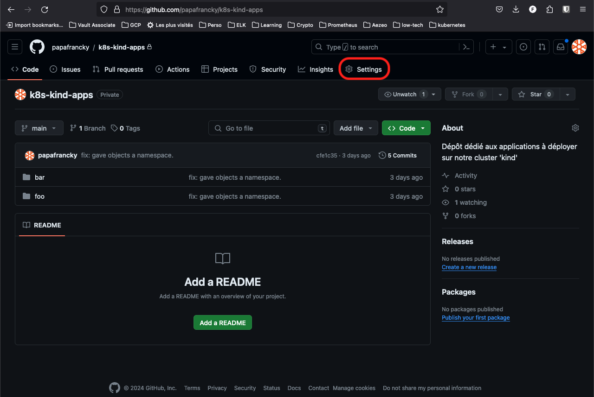
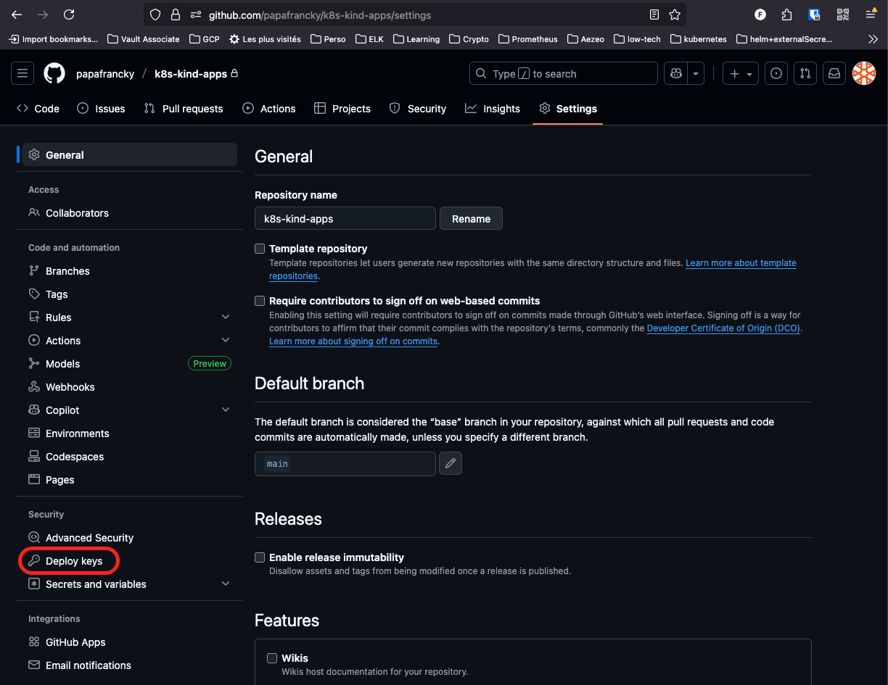
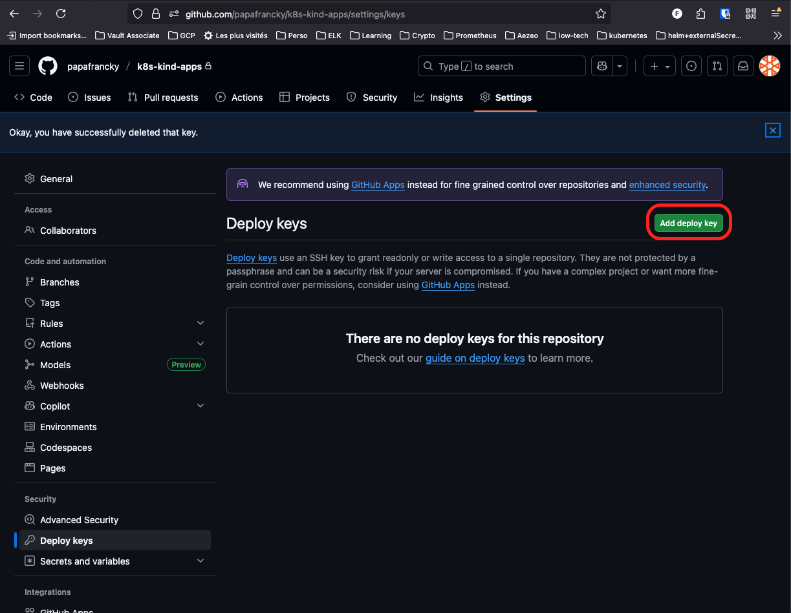
Warning
La case 'Allow write access' doit être cochée pour permettre à FluxCD d'apporter des modifications dans le dépôt !
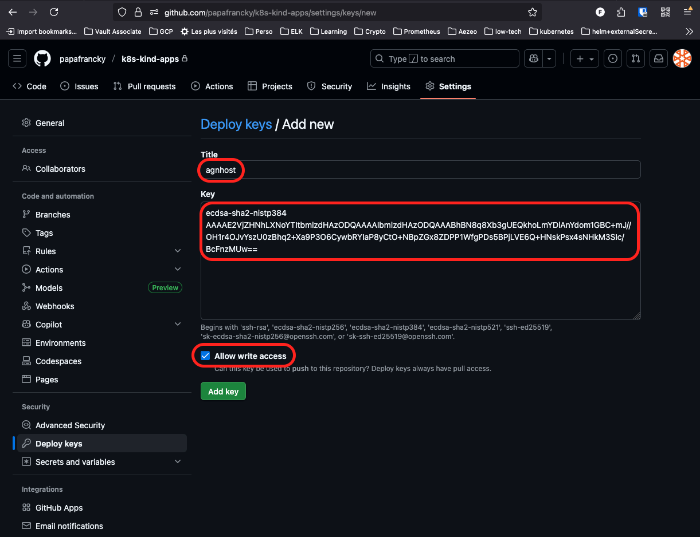
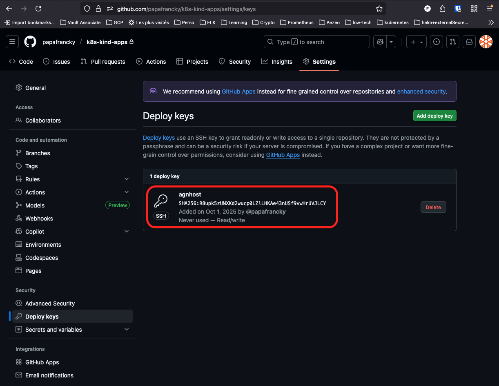
Définition du GitRepository "k8s-kind-apps"
Voici les informations qu'il faudra donner pour définir un 'GitRepository' :
- Le nom que nous souhaitons lui donner : k8s-kind-apps;
- L'URL du dépôt GitHub : ssh://git@github.com/${GITHUB_USERNAME}/k8s-kind-apps.git;
- La branche du dépôt d'où récupérer le code : main;
- Le secret d'où extraire la clé privée pour se connecter au dépôt GitHub : k8s-kind-apps-gitrepository-deploykeys.
export LOCAL_GITHUB_REPOS="${HOME}/code/github"
export GITHUB_USERNAME=papafrancky
cd ${LOCAL_GITHUB_REPOS}/k8s-kind-fluxcd
flux create source git k8s-kind-apps \
--url=ssh://git@github.com/${GITHUB_USERNAME}/k8s-kind-apps.git \
--branch=main \
--secret-ref=k8s-kind-apps-gitrepository-deploykeys \
--namespace=agnhost \
--export > apps/agnhost/k8s-kind-apps.gitrepository.yaml
Définition de la 'Kustomization' pour notre application 'agnhost'
Doc
https://fluxcd.io/flux/cmd/flux_create_kustomization/ https://fluxcd.io/flux/components/kustomize/kustomizations/
Tip
Nommer le manifest 'kustomize.yml' pose des problèmes, le nom doit être réservé pour les besoins internes de Flux. Nous le nommerons 'sync.yaml'.
Note
Nous pourrions ne définir qu'une 'kustomization' pour l'ensemble du dépôt GitHub dédié aux applications. Nous privilégions ici une approche plus atomique en créant une 'kustomization' pour chaque application.
Il est temps de pousser nos modifications dans le dépôt GitHub :
export LOCAL_GITHUB_REPOS="${HOME}/code/github"
cd ${LOCAL_GITHUB_REPOS}/k8s-kind-fluxcd
git status
git add .
git commit -m "feat: added GitRepository and Kustomization for 'agnhost' app."
git push
flux reconcile kustomization flux-system --with-source
Forçons la réconciliation :
flux reconcile kustomization flux-system --with-source
flux -n agnhost reconcile kustomization agnhost --with-source
Nous devrions désormais voir le GitRepository défini au niveau du cluster :
Surtout, nous devrions voir notre application 'agnhost' éployée sur le cluster :
Automatisation de la mise à jour des images
Notre application est conteneurisée et utilise par conséquent une image Docker : e2e-test-images/agnhost:2.39.
Nous souhaiterions que Flux la mette à jour automatiquement si une nouvelle image venait à être publiée. La mise en place d'un tel process d'automatisation nécessite la définition préalable d'un 'ImageRepository' auquel nous associerons une 'ImagePolicy'.
ImageRepository
Comme son nom l'indique, cet objet définit un dépôt d'images Docker.
export LOCAL_GITHUB_REPOS="${HOME}/code/github"
export GITHUB_USERNAME=papafrancky
cd ${LOCAL_GITHUB_REPOS}/k8s-kind-fluxcd
flux create image repository agnhost \
--image=registry.k8s.io/e2e-test-images/agnhost \
--interval=5m \
--namespace=agnhost \
--export > apps/agnhost/agnhost.imagerepository.yaml
ImagePolicy
Doc
https://fluxcd.io/flux/components/image/imagepolicies/#policy
https://github.com/Masterminds/semver#checking-version-constraints
Warning
Les images dans le dépôt ne sont suivent pas le versionnement 'SemVer'. Nous devons ici choisir une policy de type numerical (autres choix possibles: semver et alphabetical) et trier les tags de l'image agnhost par ordre croissant pour arriver à nos fins.
Une 'image policy' dicter la règle de sélection l'image, comme par exemple l'image la plus récente, ou la dernière image à une version majeure données, etc...
Dans cet exemple, nous décidons de mettre à jour notre application à sa version la plus ancienne. Bien évidemment, en réalité cela n'a pas de sens car nous attendons de l'intégration continue que nos applications restent le plus à jour. Mais nous le faisons volontairement car nous mettrons bientot du monitoring en place et validerons son bon fonctionnement en corrigeant notre 'ImagePolicy'.
cd ${LOCAL_GITHUB_REPOS}/k8s-kind-fluxcd
flux create image policy agnhost \
--image-ref=agnhost \
--namespace=agnhost \
--select-numeric=desc \
--filter-regex='\d\.\d\d' \
--export > apps/agnhost/agnhost.imagepolicy.yaml
git add .
git commit -m "feat: defined an image repository and image policy for the agnhost application."
git push
flux reconcile kustomization flux-system --with-source
Vérifions la bonne création de l'Image Repository :
apiVersion: v1
items:
- apiVersion: image.toolkit.fluxcd.io/v1beta2
kind: ImageRepository
metadata:
creationTimestamp: "2025-10-02T19:57:16Z"
finalizers:
- finalizers.fluxcd.io
generation: 1
labels:
kustomize.toolkit.fluxcd.io/name: flux-system
kustomize.toolkit.fluxcd.io/namespace: flux-system
name: agnhost
namespace: agnhost
resourceVersion: "328135"
uid: 8f3b17ff-4c2c-4360-8e5b-53b7e3c9455a
spec:
exclusionList:
- ^.*\.sig$
image: registry.k8s.io/e2e-test-images/agnhost
interval: 5m0s
provider: generic
status:
canonicalImageName: registry.k8s.io/e2e-test-images/agnhost
conditions:
- lastTransitionTime: "2025-10-02T19:57:17Z"
message: 'successful scan: found 33 tags'
observedGeneration: 1
reason: Succeeded
status: "True"
type: Ready
lastScanResult:
latestTags:
- "2.9"
- "2.57"
- "2.56"
- "2.55"
- "2.54"
- "2.53"
- "2.52"
- "2.51"
- "2.50"
- "2.48"
scanTime: "2025-10-02T19:57:17Z"
tagCount: 33
observedExclusionList:
- ^.*\.sig$
observedGeneration: 1
kind: List
metadata:
resourceVersion: ""
Nous constatons que le dépôt contient 33 versions différents de l'inage 'agnhost' et que la version la plus récente est la 2.57.
N'oublions pas de vérifier la bonne création de l'Image Policy :
Notre image policy telle que nous l'avons définie va rechercher la version la plus ancienne de l'image Docker : e2e-test-images/agnhost:2.10.
Lorsque l'automatisation de la mise à jour de l'image sera complètement en place, notre application devrait donc être 'downgradée'.
Réécriture du tag de l'image Docker
Nous devons maintenant indiquer à FluxCD où mettre le tag de l'image à jour dans le manifest YAML de déploiement de l'application 'agnhost'.
En effet, si FluxCD est capable de détecter dans l'Image Repository la version de l'image souhaitée telle que définie dans notre 'Image Policy' (dans notre cas, la plus ancienne des versions '2.xy'), il doit aussi modifier le manifest YAML du 'deployment' en conséquence.
Dans le cas de nos applications, l'image Docker et sa version sont définis dans les manifests qui décrivent les 'deployments' :
Configure image update for custom resources
https://fluxcd.io/flux/guides/image-update/#configure-image-update-for-custom-resources
FluxCD doit être aidé d'un marqueur que nous apposerons à l'endroit adéquate.
Le format du marqueur de l'image policy est le suivant :
* {"$imagepolicy": "<policy-namespace>:<policy-name>"}
* {"$imagepolicy": "<policy-namespace>:<policy-name>:tag"}
* {"$imagepolicy": "<policy-namespace>:<policy-name>:name"}
export LOCAL_GITHUB_REPOS="${HOME}/code/github"
export GITHUB_USERNAME=papafrancky
cd ${LOCAL_GITHUB_REPOS}/k8s-kind-apps
gsed -i 's/agnhost:2\.39/agnhost:2\.39 # {"$imagepolicy": "agnhost:agnhost"}/' agnhost/agnhost.deployment.yaml
git add .
git commit -m "feat: added a marker on foobar's pods manifests."
git push
apiVersion: apps/v1
kind: Deployment
metadata:
labels:
app: agnhost
name: agnhost
namespace: agnhost
spec:
replicas: 1
selector:
matchLabels:
app: agnhost
template:
metadata:
labels:
app: agnhost
spec:
containers:
- name: agnhost
image: registry.k8s.io/e2e-test-images/agnhost:2.39 # {"$imagepolicy": "agnhost:agnhost"}
command:
- /agnhost
- netexec
- --http-port
- "8080"
Image Update Automation
Il ne nous reste plus qu'à tout mettre en musique en créant une 'ImageUpdateAutomation' pour notre application.
flux create image update
https://fluxcd.io/flux/cmd/flux_create_image_update/#examples
export LOCAL_GITHUB_REPOS="${HOME}/code/github"
export AUTHOR_EMAIL="19983231-papafrancky@users.noreply.github.com"
cd ${LOCAL_GITHUB_REPOS}/k8s-kind-fluxcd
flux create image update agnhost \
--namespace=agnhost \
--git-repo-ref=k8s-kind-apps \
--git-repo-path="./agnhost" \
--checkout-branch=main \
--author-name=FluxCD \
--author-email=${AUTHOR_EMAIL} \
--commit-template="{{range .Updated.Images}}{{println .}}{{end}}" \
--export > apps/agnhost/agnhost.imageupdateautomation.yaml
git add .
git commit -m "feat: defined ImageUpdateAutomations for agnhost application."
git push
flux reconcile kustomization flux-system --with-source
---
apiVersion: image.toolkit.fluxcd.io/v1beta2
kind: ImageUpdateAutomation
metadata:
name: agnhost
namespace: agnhost
spec:
git:
checkout:
ref:
branch: main
commit:
author:
email: 19983231-papafrancky@users.noreply.github.com
name: FluxCD
messageTemplate: '{{range .Updated.Images}}{{println .}}{{end}}'
interval: 1m0s
sourceRef:
kind: GitRepository
name: k8s-kind-apps
update:
path: ./agnhost
strategy: Setters
Définir son adresse email de commit
Comment récupérer l'ID de son compte GitHub
https://api.github.com/users/${GITHUB_USERNAME}
Vérifions si la version de l'image Docker de notre application a changé :
L'application 'agnhost' déployée sur notre cluster est passée de la version 2.39 à 2.10. Flux a bien répondu à nos attentes.
Pour constater le changement de version dans le manifest YAML de 'deployment', nous pouvons regarder soit directement sur le site GitHub, soit sur notre copie locale, à condition de la remettre à jour au préalable:
Les manifests ont bien été modifiés. Vérifions la mise à jour de la version des images :
Le tag de l'image Docker a bien été réécrit pour passer de la version 2.39 à 2.10.
Tout fonctionne comme attendu !
Gestion des applications depuis un dépôt Helm
Nous venons de couvrir l'intégration continue d'une application dont le code source est hébergé dans un dépôt Git (GitHub dans notre cas).
FluxCD est également capable de gérer des applications packagées avec Helm directement depuis leur dépôt de packages (et non plus de code source). C'est ce sur quoi nous allons nous concentrer à présent.
Pour illustrer l'intégration continue d'applications packagées avec Helm, nous déploierons l'application 'podinfo' utilisée par le projet CNCF FluxCD pour faire des tests end-to-end et des workshops.
Namespace dédié à l'application 'podinfo'
Comme pour la précédente application, nous devons créer le namespace qui hébergera l'application 'podinfo'.
Si nous ne créons pas le namespace, il nous sera impossible de définir de nouveaux objets Kubernetes qui y refont référence.
Le Helm Chart 'podinfo'
Le dépôt GitHub de l'application 'podinfo' propose un Helm Chart.
Il fait donc office de 'Helm Repository' :
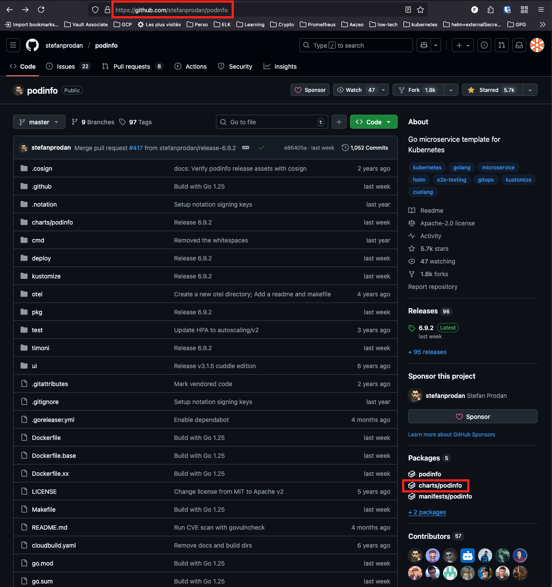
Adresse du Helm Chart 'podinfo'
Pour retrouver l'adresse où récupérer le 'Helm Chart', cliquons sur le lien 'charts/podinfo' dans la partie 'Packages' de la colonne de droite de la UI GitHub :
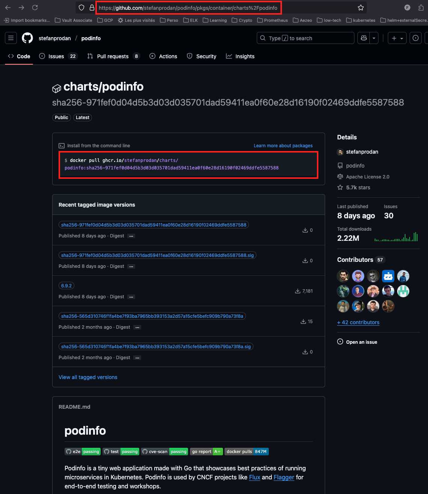
L'URL du Helm Chart de 'podinfo' est donc : oci://ghcr.io/stefanprodan/charts/podinfo.
Authentification auprès du Helm Repository
Nous devons commencer par nous authentifier auprès de la 'GitHub Container Registry' (GHCR) :
Puisque notre Helm Repository est GitHub, nous utiliserons nos 'credentials' sur cette plateforme, c'est à dire notre login et notre 'Personal Access Token' (ou 'PAT').
Testons tout de suite avant d'écrire nos manifests YAML que nous confierons à FluxCD :
Nous sommes désormais en mesure de l'interroger :
Pulled: ghcr.io/stefanprodan/charts/podinfo:6.9.2
Digest: sha256:971fef0d04d5b3d03d035701dad59411ea0f60e28d16190f02469ddfe5587588
apiVersion: v1
appVersion: 6.9.2
description: Podinfo Helm chart for Kubernetes
home: https://github.com/stefanprodan/podinfo
kubeVersion: '>=1.23.0-0'
maintainers:
- email: stefanprodan@users.noreply.github.com
name: stefanprodan
name: podinfo
sources:
- https://github.com/stefanprodan/podinfo
version: 6.9.2
Pulled: ghcr.io/stefanprodan/charts/podinfo:6.9.2
Digest: sha256:971fef0d04d5b3d03d035701dad59411ea0f60e28d16190f02469ddfe5587588
# Default values for podinfo.
replicaCount: 1
logLevel: info
host: #0.0.0.0
backend: #http://backend-podinfo:9898/echo
backends: []
image:
repository: ghcr.io/stefanprodan/podinfo
tag: 6.9.2
pullPolicy: IfNotPresent
ui:
color: "#34577c"
message: ""
logo: ""
# failure conditions
faults:
delay: false
error: false
unhealthy: false
unready: false
testFail: false
testTimeout: false
# Kubernetes Service settings
service:
enabled: true
annotations: {}
type: ClusterIP
metricsPort: 9797
httpPort: 9898
externalPort: 9898
grpcPort: 9999
grpcService: podinfo
nodePort: 31198
# the port used to bind the http port to the host
# NOTE: requires privileged container with NET_BIND_SERVICE capability -- this is useful for testing
# in local clusters such as kind without port forwarding
hostPort:
# enable h2c protocol (non-TLS version of HTTP/2)
h2c:
enabled: false
# config file settings
config:
# config file path
path: ""
# config file name
name: ""
# Additional command line arguments to pass to podinfo container
extraArgs: []
# enable tls on the podinfo service
tls:
enabled: false
# the name of the secret used to mount the certificate key pair
secretName:
# the path where the certificate key pair will be mounted
certPath: /data/cert
# the port used to host the tls endpoint on the service
port: 9899
# the port used to bind the tls port to the host
# NOTE: requires privileged container with NET_BIND_SERVICE capability -- this is useful for testing
# in local clusters such as kind without port forwarding
hostPort:
# create a certificate manager certificate (cert-manager required)
certificate:
create: false
# the issuer used to issue the certificate
issuerRef:
kind: ClusterIssuer
name: self-signed
# the hostname / subject alternative names for the certificate
dnsNames:
- podinfo
# metrics-server add-on required
hpa:
enabled: false
maxReplicas: 10
# average total CPU usage per pod (1-100)
cpu:
# average memory usage per pod (100Mi-1Gi)
memory:
# average http requests per second per pod (k8s-prometheus-adapter)
requests:
# Redis address in the format tcp://<host>:<port>
cache: ""
# Redis deployment
redis:
enabled: false
repository: redis
tag: 7.0.7
serviceAccount:
# Specifies whether a service account should be created
enabled: false
# The name of the service account to use.
# If not set and create is true, a name is generated using the fullname template
name:
# List of image pull secrets if pulling from private registries
imagePullSecrets: []
# set container security context
securityContext: {}
# set pod security context
podSecurityContext: {}
ingress:
enabled: false
className: ""
additionalLabels: {}
annotations: {}
# kubernetes.io/ingress.class: nginx
# kubernetes.io/tls-acme: "true"
hosts:
- host: podinfo.local
paths:
- path: /
pathType: ImplementationSpecific
tls: []
# - secretName: chart-example-tls
# hosts:
# - chart-example.local
linkerd:
profile:
enabled: false
# create Prometheus Operator monitor
serviceMonitor:
enabled: false
interval: 15s
additionalLabels: {}
resources:
limits:
requests:
cpu: 1m
memory: 16Mi
# Extra environment variables for the podinfo container
extraEnvs: []
# Example on how to configure extraEnvs
# - name: OTEL_EXPORTER_OTLP_TRACES_ENDPOINT
# value: "http://otel:4317"
# - name: MULTIPLE_VALUES
# value: TEST
nodeSelector: {}
tolerations: []
affinity: {}
podAnnotations: {}
# https://kubernetes.io/docs/concepts/workloads/pods/pod-topology-spread-constraints/
topologySpreadConstraints: []
# Disruption budget will be configured only when the replicaCount is greater than 1
podDisruptionBudget: {}
# maxUnavailable: 1
# https://kubernetes.io/docs/concepts/workloads/pods/pod-lifecycle#container-probes
probes:
readiness:
initialDelaySeconds: 1
timeoutSeconds: 5
failureThreshold: 3
successThreshold: 1
periodSeconds: 10
liveness:
initialDelaySeconds: 1
timeoutSeconds: 5
failureThreshold: 3
successThreshold: 1
periodSeconds: 10
startup:
enable: false
initialDelaySeconds: 10
timeoutSeconds: 5
failureThreshold: 20
successThreshold: 1
periodSeconds: 10
Nos 'credentials' ainsi que l'adresse du Helm Chart sont vérifiés et exploitables, nous pouvons continuer.
Le HelmRepository 'podinfo'
Authentification au Helm Repository
Nous devons créer un 'secret' de type 'Docker registry' pour nous y authentifier, comme nous venons de le faire pour récupérer des informations à propos du Helm Chart. S'agissant d'un 'secret', nous ne le placerons pas dans notre dépôt GitHub.
export GITHUB_USER=papafrancky
export GITHUB_TOKEN=<my_github_personal_access_token>
kubectl create secret docker-registry podinfo-helmrepository \
--namespace=podinfo \
--docker-server=ghcr.io \
--docker-username=${GITHUB_USER} \
--docker-password=${GITHUB_TOKEN}
kubectl -n podinfo get secret podinfo-helmrepository
apiVersion: v1
items:
- apiVersion: v1
data:
.dockerconfigjson: eyJhdXRocyI6eyJnaGNyLmlvIjp7InVzZXJuYW1lIjoicGFwYWZyYX5ja9kiLCJwYXNzd29yZCI6ImdocF9vTmNQZHlQRU04SlllT4diN0VQYWZ6Yk1XQk5zNmQ0MFRuMUciLCJhdXRoIjoiY0dGd1lXWnlZVzVqYTNrNloyaHdYMjlPWTFCa2VWQkZUVGhLV1dWaloySTNSVkJoWm5waVRWZENUbk0yWkRRd0KHNHhSdz09In19fQ==
kind: Secret
metadata:
creationTimestamp: "2025-10-04T09:14:05Z"
name: podinfo-helmrepository
namespace: podinfo
resourceVersion: "356702"
uid: 431c3c9f-0790-49ed-928c-2e0f774b1da6
type: kubernetes.io/dockerconfigjson
kind: List
metadata:
resourceVersion: ""
Définition du HelmRepository
export LOCAL_GITHUB_REPOS="${HOME}/code/github"
cd ${LOCAL_GITHUB_REPOS}/k8s-kind-fluxcd
flux create source helm podinfo \
--namespace=podinfo \
--url=https://stefanprodan.github.io/podinfo \
--secret-ref=podinfo-helmrepository \
--interval=10m \
--export > ./apps/podinfo/podinfo.helmrepository.yaml
#git add .
#git commit -m 'Defined helmrepository for podinfo application.'
#git push
Le GitRepository pour l'application 'podinfo'
Dans la ségrégation des rôles entre Devs et Ops, la définition de la HelmRelease incombera à l'équipe de Dev en charge de l'application.
C'est elle qui personnalisera son application en surchargeant les valeurs par défaut de la Helm Chart utilisée (nous couvrirons la définition de la HelmRelease ensuite).
Ces objets seront donc définis dans des manifests YAML dans le dépôt GitHub dédié aux applications : https://github.com/${GITHUB_USER}/k8s-kind-apps.
Deploy Key
Pour permettre à FluxCD de se connecter au dépôt GitHub des applications dont il doit gérer l'intégration continue, nous devons créer une paire de clés SSH et déployer la clé publique sur les dépôts concernés.
Nous avons besoin de définir les 'deploy keys' avant de pouvoir définir un 'GitRepository'.
S'agissant de 'secrets', nous ne conserverons pas le manifest YAML un le dépôt GitHub. La solution idéale serait d'utiliser un coffre (ou 'vault') pour gérer les 'secrets' en toute sécurité, sujet que nous couvrirons dans un autre HOWTO.
Création de la 'Deploy Key'
export GITHUB_USERNAME=papafrancky
flux create secret git k8s-kind-apps-gitrepository-deploykeys \
--url=ssh://github.com/${GITHUB_USERNAME}/k8s-kind-apps \
--namespace=podinfo
Vérifions la bonne création de la 'deploy key' pour de dépôt des applications :
De ce 'secret' qui contient un jeu de clés privée et publique, nous devons extraire la clé publique pour la renseigner sur notre dépôt GitHub :
Déploiement de la 'Deploy Key' sur le dépôt GitHub
Nous devons ensuite déployer la clé publique sur le dépôt GitHub comme nous l'avons fait pour l'application 'agnhost'.
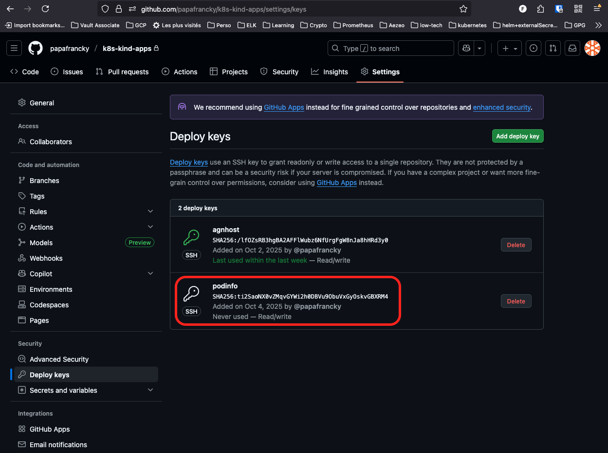
Définition du GitRepository
Maintenant que nous avons défini la 'Deploy Key', nous pouvons nous atteler à la définition du GitRepository où seront placés la HelmRelease de 'podinfo' ainsi que ses '**values' customisées :
export GITHUB_USERNAME=papafrancky
export LOCAL_GITHUB_REPOS="${HOME}/code/github"
cd ${LOCAL_GITHUB_REPOS}/k8s-kind-fluxcd
flux create source git k8s-kind-apps \
--url=ssh://git@github.com/${GITHUB_USERNAME}/k8s-kind-apps.git \
--branch=main \
--secret-ref=k8s-kind-apps-gitrepository-deploykeys \
--namespace=podinfo \
--export > apps/podinfo/k8s-kind-apps.gitrepository.yaml
Kustomization du GitRepository pour l'application 'podinfo'
Nous devons indiquer à FluxCD qu'il doit gérer les manifests qu'il trouvera dansle GitRepository 'k8s-kind-apps ', dans le sous-répertoire dédié à l'application 'podinfo' (puisque nous avons pris le parti de partager un même dépôt GitHub pour nos applications) : ./podinfo
C'est le rôle de la 'Kustomization'.
Poussons les nouveaux manifests YAML dans notre dépôt GitHub :
export LOCAL_GITHUB_REPOS="${HOME}/code/github"
cd ${LOCAL_GITHUB_REPOS}/k8s-kind-fluxcd
git add .
git commit -m 'Added GitRepository, HelmRepository and Kustomization for podinfo app.'
git push
flux reconcile kustomization flux-system --with-source
Vérifions la création des nouveaux objets Kubernetes :
NAME URL AGE READY STATUS
gitrepository.source.toolkit.fluxcd.io/k8s-kind-apps ssh://git@github.com/papafrancky/k8s-kind-apps.git 1m True stored artifact for revision 'main@sha1:dfa98e76317ed1c3d1901d721e53d55e4f61f96c'
NAME URL AGE READY STATUS
helmrepository.source.toolkit.fluxcd.io/podinfo https://stefanprodan.github.io/podinfo 1m True stored artifact: revision 'sha256:c0d4535103105a4bb59954a178f24bdb7dbac3072758312c8b3f09fb3d85f192'
NAME AGE READY STATUS
kustomization.kustomize.toolkit.fluxcd.io/podinfo 1m False kustomization path not found: stat /tmp/kustomization-2457791261/podinfo: no such file or directory
Nous constatons que la 'kustomization' ne se trouve pas dans l'état attendu. Et pour cause : nous n'avons pas encore défini aucun objet (HelmRelease et custom values) dans le dépôt GitHub des applications 'k8s-kind-apps', qui ne contient en conséquence pas de sous-répertoire 'podinfo' !
Il est temps de s'en occuper à présent.
La Helm Release
Une 'Helm Release' est une instance d'une 'Helm Chart' déployée sur un cluster Kubernetes.
Doc
https://helm.sh/docs/glossary/#release
Personnalisation de la Helm Release 'podinfo'
L'application 'podinfo' est paramétrée avec des valeurs par défaut définies dans ce qu'on appelle les 'values' de la Helm Chart.
Pour connaître les valeurs par défaut de l'application :
# Default values for podinfo.
replicaCount: 1
logLevel: info
host: #0.0.0.0
backend: #http://backend-podinfo:9898/echo
backends: []
image:
repository: ghcr.io/stefanprodan/podinfo
tag: 6.9.2
pullPolicy: IfNotPresent
ui:
color: "#34577c"
message: ""
logo: ""
# failure conditions
faults:
delay: false
error: false
unhealthy: false
unready: false
testFail: false
testTimeout: false
# Kubernetes Service settings
service:
enabled: true
annotations: {}
type: ClusterIP
metricsPort: 9797
httpPort: 9898
externalPort: 9898
grpcPort: 9999
grpcService: podinfo
nodePort: 31198
# the port used to bind the http port to the host
# NOTE: requires privileged container with NET_BIND_SERVICE capability -- this is useful for testing
# in local clusters such as kind without port forwarding
hostPort:
# enable h2c protocol (non-TLS version of HTTP/2)
h2c:
enabled: false
# config file settings
config:
# config file path
path: ""
# config file name
name: ""
# Additional command line arguments to pass to podinfo container
extraArgs: []
# enable tls on the podinfo service
tls:
enabled: false
# the name of the secret used to mount the certificate key pair
secretName:
# the path where the certificate key pair will be mounted
certPath: /data/cert
# the port used to host the tls endpoint on the service
port: 9899
# the port used to bind the tls port to the host
# NOTE: requires privileged container with NET_BIND_SERVICE capability -- this is useful for testing
# in local clusters such as kind without port forwarding
hostPort:
# create a certificate manager certificate (cert-manager required)
certificate:
create: false
# the issuer used to issue the certificate
issuerRef:
kind: ClusterIssuer
name: self-signed
# the hostname / subject alternative names for the certificate
dnsNames:
- podinfo
# metrics-server add-on required
hpa:
enabled: false
maxReplicas: 10
# average total CPU usage per pod (1-100)
cpu:
# average memory usage per pod (100Mi-1Gi)
memory:
# average http requests per second per pod (k8s-prometheus-adapter)
requests:
# Redis address in the format tcp://<host>:<port>
cache: ""
# Redis deployment
redis:
enabled: false
repository: redis
tag: 7.0.7
serviceAccount:
# Specifies whether a service account should be created
enabled: false
# The name of the service account to use.
# If not set and create is true, a name is generated using the fullname template
name:
# List of image pull secrets if pulling from private registries
imagePullSecrets: []
# set container security context
securityContext: {}
# set pod security context
podSecurityContext: {}
ingress:
enabled: false
className: ""
additionalLabels: {}
annotations: {}
# kubernetes.io/ingress.class: nginx
# kubernetes.io/tls-acme: "true"
hosts:
- host: podinfo.local
paths:
- path: /
pathType: ImplementationSpecific
tls: []
# - secretName: chart-example-tls
# hosts:
# - chart-example.local
linkerd:
profile:
enabled: false
# create Prometheus Operator monitor
serviceMonitor:
enabled: false
interval: 15s
additionalLabels: {}
resources:
limits:
requests:
cpu: 1m
memory: 16Mi
# Extra environment variables for the podinfo container
extraEnvs: []
# Example on how to configure extraEnvs
# - name: OTEL_EXPORTER_OTLP_TRACES_ENDPOINT
# value: "http://otel:4317"
# - name: MULTIPLE_VALUES
# value: TEST
nodeSelector: {}
tolerations: []
affinity: {}
podAnnotations: {}
# https://kubernetes.io/docs/concepts/workloads/pods/pod-topology-spread-constraints/
topologySpreadConstraints: []
# Disruption budget will be configured only when the replicaCount is greater than 1
podDisruptionBudget: {}
# maxUnavailable: 1
# https://kubernetes.io/docs/concepts/workloads/pods/pod-lifecycle#container-probes
probes:
readiness:
initialDelaySeconds: 1
timeoutSeconds: 5
failureThreshold: 3
successThreshold: 1
periodSeconds: 10
liveness:
initialDelaySeconds: 1
timeoutSeconds: 5
failureThreshold: 3
successThreshold: 1
periodSeconds: 10
startup:
enable: false
initialDelaySeconds: 10
timeoutSeconds: 5
failureThreshold: 20
successThreshold: 1
periodSeconds: 10
Tip
Il est également possible de consulter les 'default values' directement sur le site artifacthub.io :
https://artifacthub.io/packages/helm/podinfo/podinfo?modal=values
Par exemple, souhaitons apporter un peu plus de résilience à l'application en exécutant 2 ReplicaSets plutôt qu'un. Nous souhaitons également gérer finement les ressources de l'application, et changer le message d'accueil de la UI.
Note
Nous écrirons les 'values' que nous souhaitons surcharger aux 'default values' dans une ConfigMap Kubernetes.
export LOCAL_GITHUB_REPOS="${HOME}/code/github"
cd ${LOCAL_GITHUB_REPOS}/k8s-kind-apps
mkdir podinfo
# Création d'un fichier temporaire 'values.yaml' contenant les paramètres à surcharger :
cat << EOF > values.yaml
replicaCount: 2
resources:
limits:
memory: 256Mi
requests:
cpu: 100m
memory: 64Mi
ui:
message: "Hello from PodInfo ! ^^"
EOF
# Création de la ConfigMap à partir du fichier 'values.yaml' :
kubectl create configmap podinfo-values \
--namespace=podinfo \
--from-file=values.yaml \
--dry-run=client -o yaml > podinfo/podinfo.values.yaml
# Suppression du fichier 'values.yaml' :
/bin/rm values.yaml
Définition de la HelmRelease
Définissons maintenant la HelmRelease :
Note
Au moment de la rédaction de ce HOWTO, la dernière version de 'podinfo' était la 6.9.2. Nous choisissons ici de limiter notre 'Helm Release' à la version 5 (--chart-version="<6.0.0"), pour tester ensuite les notifications via un service de messagerie instantanée que nous allons très vite mettre en place.
export LOCAL_GITHUB_REPOS="${HOME}/code/github"
cd ${LOCAL_GITHUB_REPOS}/k8s-kind-apps
flux create helmrelease podinfo \
--namespace=podinfo \
--source=HelmRepository/podinfo.podinfo \
--chart=podinfo \
--chart-version="<6.0.0" \
--values-from=ConfigMap/podinfo-values \
--interval=10m \
--export > podinfo/podinfo.helmrelease.yaml
git add .
git commit -m 'Defined podinfo HelmRelease with custom values as a ConfigMap.'
git push
flux reconcile kustomization flux-system --with-source
Regardons si la magie opère :
NAME AGE READY STATUS
kustomization.kustomize.toolkit.fluxcd.io/podinfo 29m True Applied revision: main@sha1:36cdfa300f5d4ad6787264956be13816ab683800
NAME AGE READY STATUS
helmrelease.helm.toolkit.fluxcd.io/podinfo 65s True Helm install succeeded for release podinfo/podinfo.v1 with chart podinfo@5.2.1
Bonne nouvelle : notre 'kustomization' est désormais dans l'état attendu !
Par ailleurs, notre 'HelmRelease' nouvellement définie semble elle-aussi déployée avec succès et à une version inférieure à 6.
Vérifions si l'application est bel et bien déployée :
NAME READY STATUS RESTARTS AGE
pod/podinfo-db75857bd-7z9vw 1/1 Running 0 5m43s
pod/podinfo-db75857bd-n6mt6 1/1 Running 0 5m43s
NAME TYPE CLUSTER-IP EXTERNAL-IP PORT(S) AGE
service/podinfo ClusterIP 10.43.60.99 <none> 9898/TCP,9999/TCP 5m43s
NAME READY UP-TO-DATE AVAILABLE AGE
deployment.apps/podinfo 2/2 2 2 5m43s
NAME DESIRED CURRENT READY AGE
replicaset.apps/podinfo-db75857bd 2 2 2 5m43s
Nous observons 2 Replicasets comme nous l'avons demandé dans nos 'custom values'.
Utilisons la redirection de ports pour accéder à l'application avec un navigateur :
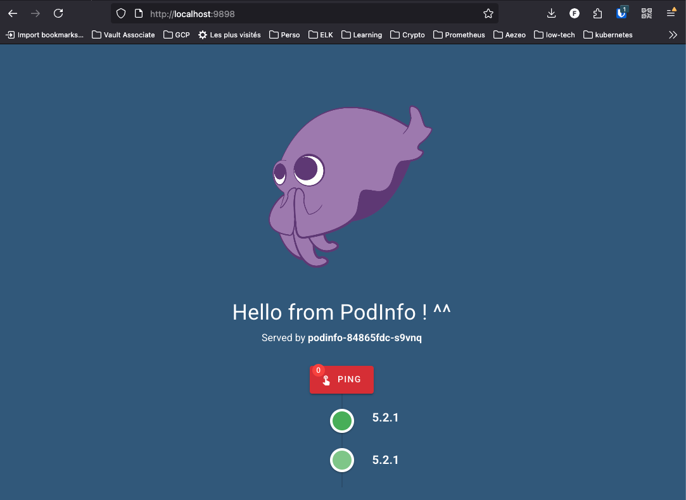 Nous voyons bien notre message d'accueil personnalisé : 'Hello PodInfo! ^^'.
Notifications Discord
Nous avons configuré FluxCD pour gérer automatiquement la mise à jour de nos applications 'agnhost' et 'podinfo'.
Nous aimerions maintenant être alertés lorsqu'un changement affecte nos applications. Plutôt qu'une messagerie mail classique, nous privilégions une messagerie instantanée. Notre choix s'est porté sur la plateforme 'Discord' car elle permet de configurer des 'webhooks' sur des 'channels' sans pour autant devoir payer un abonnement, comme ce serait le cas avec Slack.
Installation et configuration du client 'Discord'
Installation du client 'Discord'
Pour l'installer, il faut accéder au site web discord.com et télécharger le client :
Création d'un serveur Discord
Discord permet la création de 'serveurs' que nous pouvons restreindre pour notre usage personnel et qui hébergeront les 'salons' (ou 'rooms') que nous dédierons à l'envoi de notifications de FluxCD concernant nos applications.
Une fois le client Discord démarré, cliquons sur le '+' situé dans la colonne de gauche. Nous répondrons ensuite aux différentes questions et donnerons à notre serveur le nom de notre cluster Kubernetes : k8s-kind.
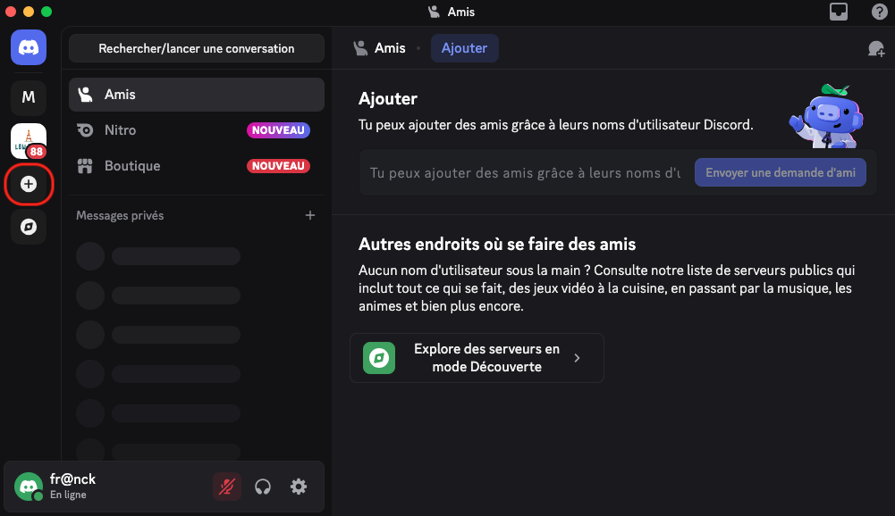
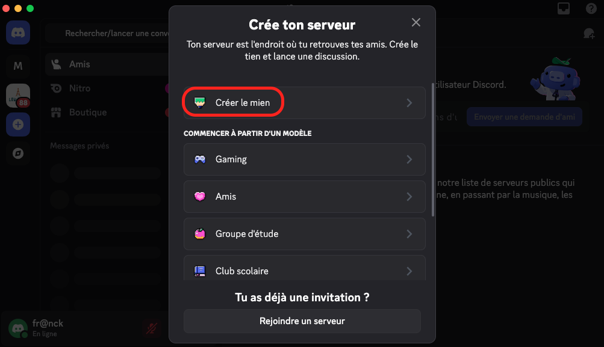
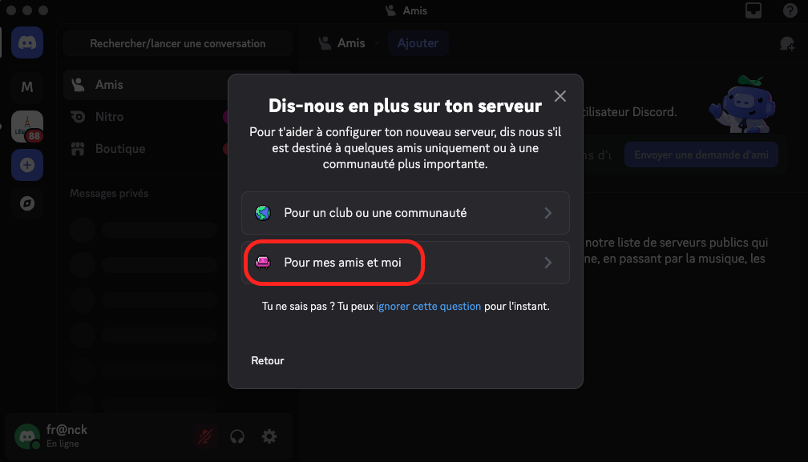
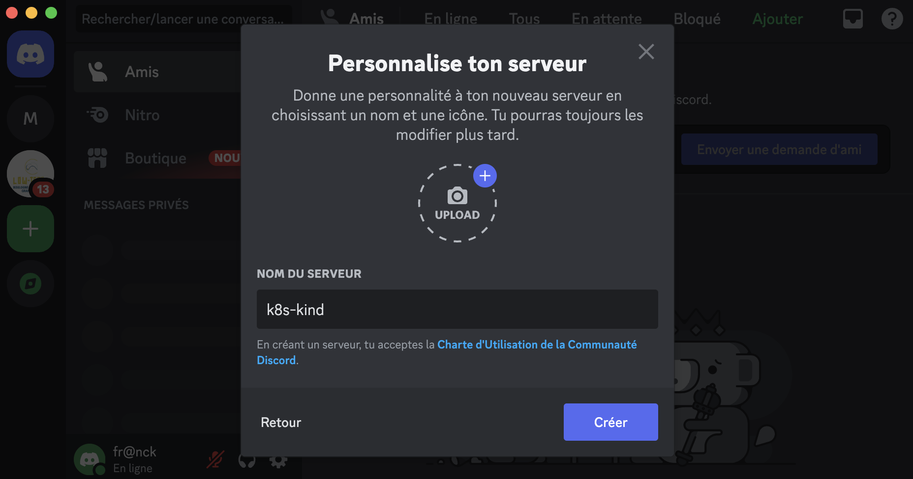
Note
J'ai choisi l'icône de 'Kubernetes' pour mon serveur Discord que j'ai nommé 'k8s'.
{kind=link}
Création d'un channel dans notre serveur Discord
Nous souhaitons créer un channel pour chacune de nos applications. La procédure étant la même, nous montrerons la création du salon pour l'application 'agnhost'. Vous devrez faire la même chose pour les autres applications.
Sélectionnez le serveur 'k8s-kind' dans la colonne de gauche, puis dans la partie 'salons textuels', cliquez sur le '+' :
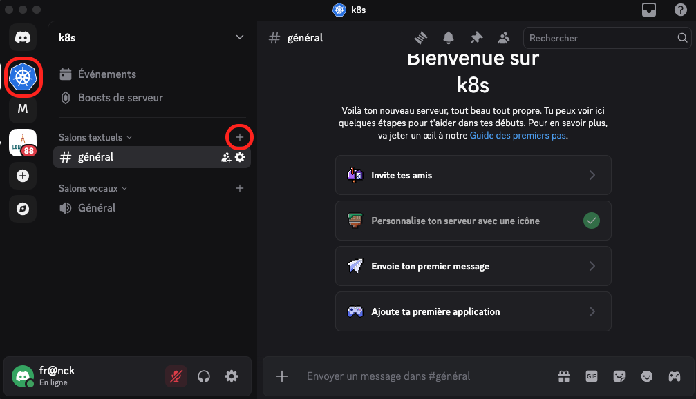
Précisez qu'il s'agit bien d'un salon textuel, précisez son nom 'foo' et choisissez de le rendre privé :
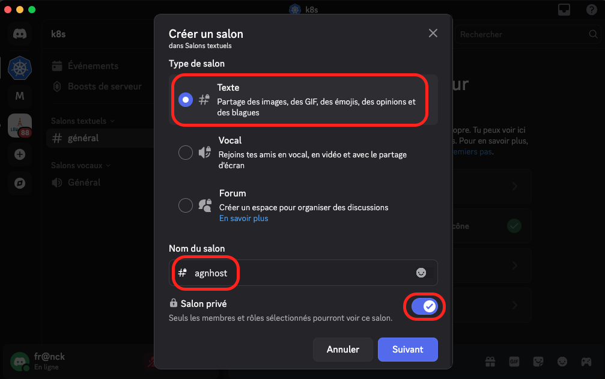
Passez l'étape d'ajout de membres :
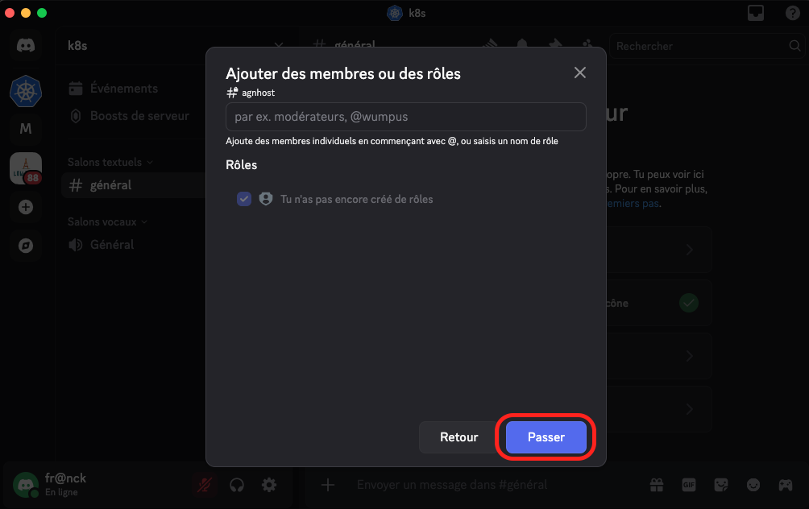
Votre channel 'agnhost' est prêt. Il vous reste à créer le channel 'podinfo'.
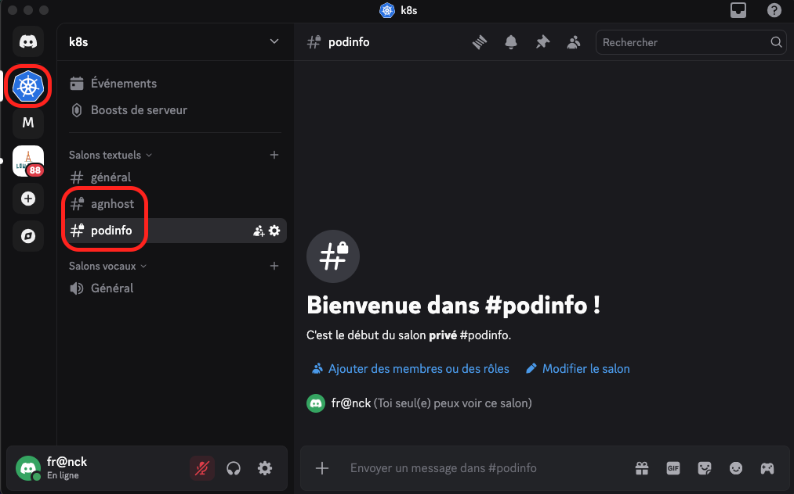
Création d'un 'webhook' pour chaque salon
Cliquez sur la roue dentée 'paramètres' à droite du nom du salon, puis sur 'intégrations' et enfin sur le bouton 'Créer un webhook'.
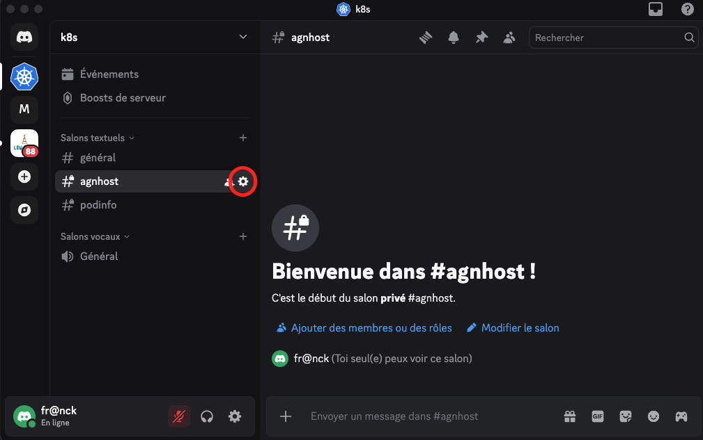
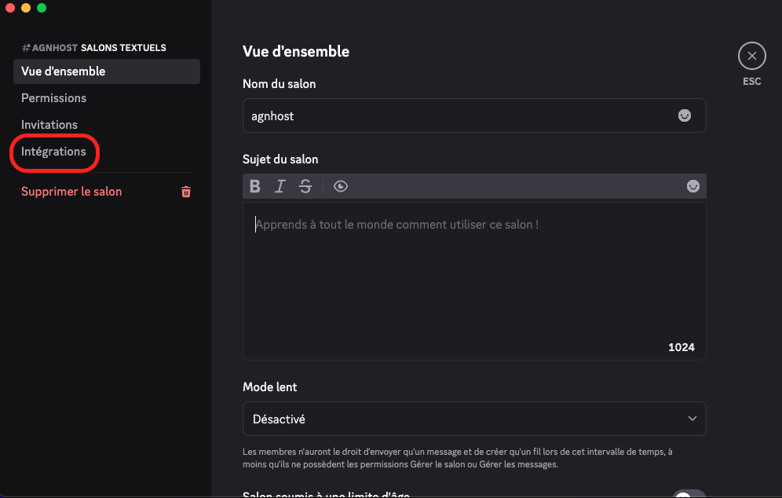

Un nom lui est donné de manière aléatoire (ex: 'Spidey Bot'). Pour changer le nom du 'webhook' par 'FluxCD', copiez l'URL en cliquant sur le bouton idoine, et enregistrez les modifications :
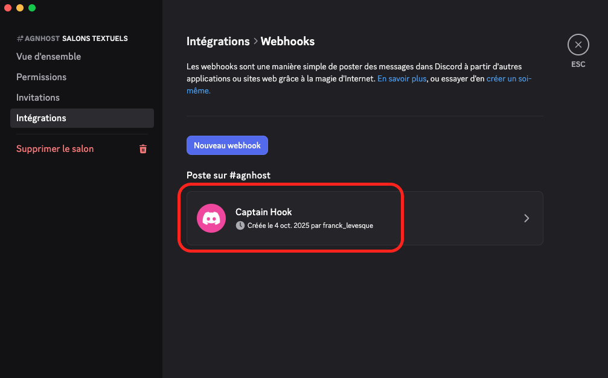
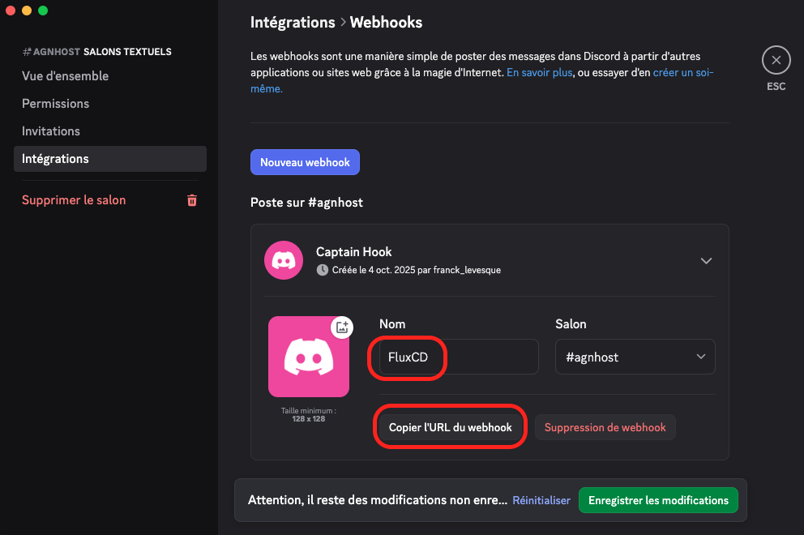
Nous répétons les mêmes opérations pour la création du 'channel' _'podinfo'_.
Les URLs des webhooks des salons sont les suivants :
| Channel | Webhook URL |
|---|---|
| agnhost | https://discord.com/api/webhooks/1424064102791123036/JDExJGHiqCP9qcJiybnBhe8MTT_mu8lFlLM6QdYBh0RJ-5E4QUa4aGDflMjRATJwQq57 |
| podinfo | https://discord.com/api/webhooks/1424065205444415508/xEeNJVhhRpyu_mFOMWyYLJMuNhQjgr3tKPJYzs5eUHYYiNWnYgh_hMuZIABkJw8syPl4 |
Création d'un secret pour chaque webhook
Ces informations sont considérées comme sensibles dans la mesure où quiconque en disposerait pourrait publier des informations dans nos channels privés. Nous les enregistrerons dans Kubernetes comme des 'secrets'.
export WEBHOOK_AGNHOST="https://discord.com/api/webhooks/1424064102791123036/JDExJGHiqCP9qcJiybnBhe8MTT_mu8lFlLM6QdYBh0RJ-5E4QUa4aGDflMjRATJwQq57"
export WEBHOOK_PODINFO="https://discord.com/api/webhooks/1424065205444415508/xEeNJVhhRpyu_mFOMWyYLJMuNhQjgr3tKPJYzs5eUHYYiNWnYgh_hMuZIABkJw8syPl4"
kubectl -n agnhost create secret generic discord-webhook --from-literal=address=${WEBHOOK_AGNHOST}
kubectl -n podinfo create secret generic discord-webhook --from-literal=address=${WEBHOOK_PODINFO}
Définition des 'notification providers'
export LOCAL_GITHUB_REPOS="${HOME}/code/github"
cd ${LOCAL_GITHUB_REPOS}/k8s-kind-fluxcd
flux create alert-provider discord \
--type=discord \
--secret-ref=discord-webhook \
--channel=agnhost \
--username=FluxCD \
--namespace=agnhost \
--export > ./apps/agnhost/discord.notification-provider.yaml
flux create alert-provider discord \
--type=discord \
--secret-ref=discord-webhook \
--channel=podinfo \
--username=FluxCD \
--namespace=podinfo \
--export > ./apps/podinfo/discord.notification-provider.yaml
Configuration des alertes
export LOCAL_GITHUB_REPOS="${HOME}/code/github"
cd ${LOCAL_GITHUB_REPOS}/k8s-kind-fluxcd
flux create alert discord \
--event-severity=info \
--event-source='GitRepository/*,Kustomization/*,ImageRepository/*,ImagePolicy/*,HelmRepository/*,HelmRelease/*' \
--provider-ref=discord \
--namespace=agnhost \
--export > apps/agnhost/discord.alert.yaml
flux create alert discord \
--event-severity=info \
--event-source='GitRepository/*,Kustomization/*,ImageRepository/*,ImagePolicy/*,HelmRepository/*,HelmRelease/*' \
--provider-ref=discord \
--namespace=podinfo \
--export > apps/podinfo/discord.alert.yaml
---
apiVersion: notification.toolkit.fluxcd.io/v1beta3
kind: Alert
metadata:
name: discord
namespace: agnhost
spec:
eventSeverity: info
eventSources:
- kind: GitRepository
name: '*'
- kind: Kustomization
name: '*'
- kind: ImageRepository
name: '*'
- kind: ImagePolicy
name: '*'
- kind: HelmRepository
name: '*'
- kind: HelmRelease
name: '*'
providerRef:
name: discord
---
apiVersion: notification.toolkit.fluxcd.io/v1beta3
kind: Alert
metadata:
name: discord
namespace: podinfo
spec:
eventSeverity: info
eventSources:
- kind: GitRepository
name: '*'
- kind: Kustomization
name: '*'
- kind: ImageRepository
name: '*'
- kind: ImagePolicy
name: '*'
- kind: HelmRepository
name: '*'
- kind: HelmRelease
name: '*'
providerRef:
name: discord
Activation des alertes et notifications
Poussons nos modifications dans notre dépôt GitHub :
export LOCAL_GITHUB_REPOS="${HOME}/code/github"
cd ${LOCAL_GITHUB_REPOS}/k8s-kind-fluxcd
git add .
git commit -m "'Setting up Discord alerting for agnhost and podinfo applications."
git push
flux reconcile kustomization flux-system --with-source
Vérifions la bonne création des alertes et notification providers :
Tests
Application 'agnhost'
Contexte
Pour rappel, l'application 'agnhost' est déployée sur notre cluster Kubernetes à la version 2.10 :
L'ImageRepository propose pourtant des images beaucoup récentes de l'application :
L'ImagePolicy que nous avons mise en place nous en donne la raison :
Nous avons expressément demandé à Flux qu'il choisisse le tag (au format 'x.yz') le plus petit ('order: desc').
Test
Modifions notre ImagePolicy de sorte qu'il choisisse désormais l'image au tag numériquement le plus élevé (pour ne pas dire l'image la plus récente) et forçons la réconciliation :
export LOCAL_GITHUB_REPOS="${HOME}/code/github"
cd ${LOCAL_GITHUB_REPOS}/k8s-kind-fluxcd
gsed -i 's/order: desc/order: asc/' apps/foo/agnhost.imagepolicy.yaml
git add .
git commit -m "Modifying 'agnhost' image policy to get the latest image."
git push
flux reconcile kustomization flux-system --with-source
```
Surveillons nos pods pendant la réconciliation :
NAME READY STATUS RESTARTS AGE
agnhost-7cd476ffd6-l7v4m 1/1 Running 0 12m
agnhost-86d684f6bf-qsccn 0/1 Pending 0 0s
agnhost-86d684f6bf-qsccn 0/1 Pending 0 0s
agnhost-86d684f6bf-qsccn 0/1 ContainerCreating 0 0s
agnhost-86d684f6bf-qsccn 1/1 Running 0 1s
agnhost-7cd476ffd6-l7v4m 1/1 Terminating 0 14m
agnhost-7cd476ffd6-l7v4m 0/1 Completed 0 14m
agnhost-7cd476ffd6-l7v4m 0/1 Completed 0 14m
agnhost-7cd476ffd6-l7v4m 0/1 Completed 0 14m
Nous voyons le pod 'agnhost-7cd476ffd6-l7v4m' se faire remplacer par un nouveau pod 'agnhost-7cd476ffd6-l7v4m'.
Pendant l'opération, le client Discord sonne et affiche des alertes :
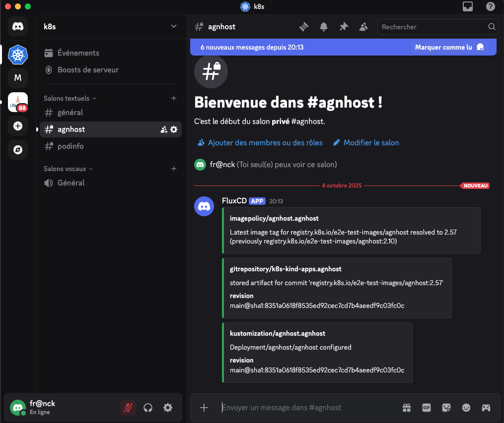
Application 'podinfo'
Contexte
L'application 'podinfo' est déployée à la version 5.2.1 :
Nous savons qu'il ne s'agit pas de la version la plus récente :
Pulled: ghcr.io/stefanprodan/charts/podinfo:6.9.2
Digest: sha256:971fef0d04d5b3d03d035701dad59411ea0f60e28d16190f02469ddfe5587588
apiVersion: v1
appVersion: 6.9.2
description: Podinfo Helm chart for Kubernetes
home: https://github.com/stefanprodan/podinfo
kubeVersion: '>=1.23.0-0'
maintainers:
- email: stefanprodan@users.noreply.github.com
name: stefanprodan
name: podinfo
sources:
- https://github.com/stefanprodan/podinfo
version: 6.9.2
La version la plus récente de 'podinfo' est taguée 6.9.2
Nous avions précisé dans la définition de la HelmRelease que nous ne voulions pas de versions >= 6.0.0 :
Test
export LOCAL_GITHUB_REPOS="${HOME}/code/github"
cd ${LOCAL_GITHUB_REPOS}/k8s-kind-apps
gsed -i "s/version: <6.0.0/version: \'\*\'/" podinfo/podinfo.helmrelease.yaml
git add .
git commit -m 'Modified podinfo HelmRelease to get the latest app version.'
git push
flux -n podinfo reconcile kustomization podinfo --with-source
Surveillons les pods de l'application pendant la réconcliation :
NAME READY STATUS RESTARTS AGE
podinfo-84865fdc-hfdsp 1/1 Running 1 (122m ago) 5h28m
podinfo-84865fdc-s9vnq 1/1 Running 1 (122m ago) 5h28m
podinfo-db75857bd-vdl6k 0/1 Pending 0 0s
podinfo-84865fdc-hfdsp 1/1 Terminating 1 (124m ago) 5h31m
podinfo-db75857bd-vdl6k 0/1 Pending 0 0s
podinfo-db75857bd-vdl6k 0/1 ContainerCreating 0 0s
podinfo-db75857bd-9c6pq 0/1 Pending 0 0s
podinfo-db75857bd-9c6pq 0/1 Pending 0 0s
podinfo-db75857bd-9c6pq 0/1 ContainerCreating 0 0s
podinfo-db75857bd-vdl6k 0/1 Running 0 2s
podinfo-db75857bd-9c6pq 0/1 Running 0 3s
podinfo-db75857bd-vdl6k 1/1 Running 0 3s
podinfo-84865fdc-s9vnq 1/1 Terminating 1 (124m ago) 5h31m
podinfo-84865fdc-hfdsp 0/1 Completed 1 (124m ago) 5h31m
podinfo-84865fdc-hfdsp 0/1 Completed 1 (124m ago) 5h31m
podinfo-84865fdc-hfdsp 0/1 Completed 1 (124m ago) 5h31m
podinfo-db75857bd-9c6pq 1/1 Running 0 4s
podinfo-84865fdc-s9vnq 0/1 Completed 1 (124m ago) 5h31m
podinfo-84865fdc-s9vnq 0/1 Completed 1 (124m ago) 5h31m
podinfo-84865fdc-s9vnq 0/1 Completed 1 (124m ago) 5h31m
Les pods podinfo-84865fdc-hfdsp et podinfo-84865fdc-s9vnq sont remplacés par deux nouveaux pods podinfo-db75857bd-vdl6k et podinfo-db75857bd-vdl6k.
Vérifions la version de notre application maintenant :
Nous sommes désormais bien à la version 6.9.2 de l'application 'podinfo', soit la plus récente.
Discord nous alerte dans le même temps de changements orchestrés sur l'application 'podinfo' :
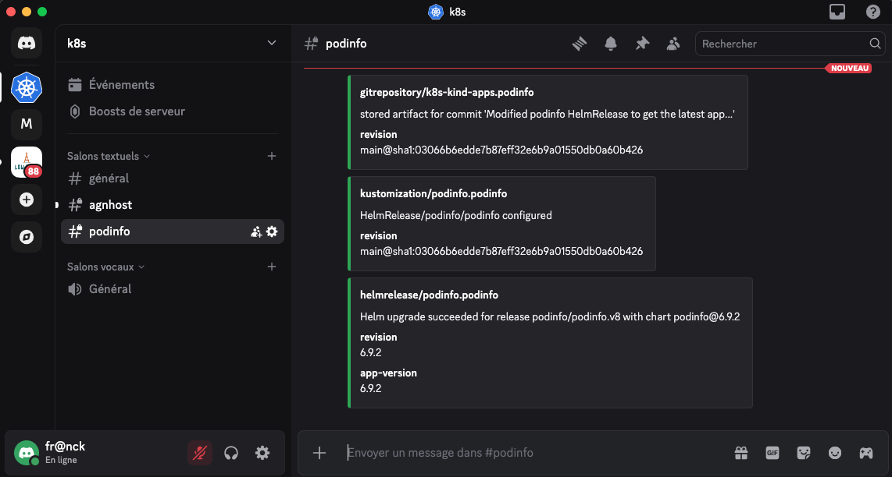
Nous avons validé le bon fonctionnement de la remontée d'alertes via le client Discord pour nos applications 'agnhost' et 'podinfo'